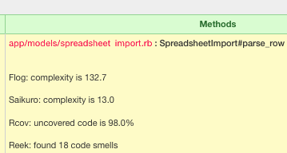
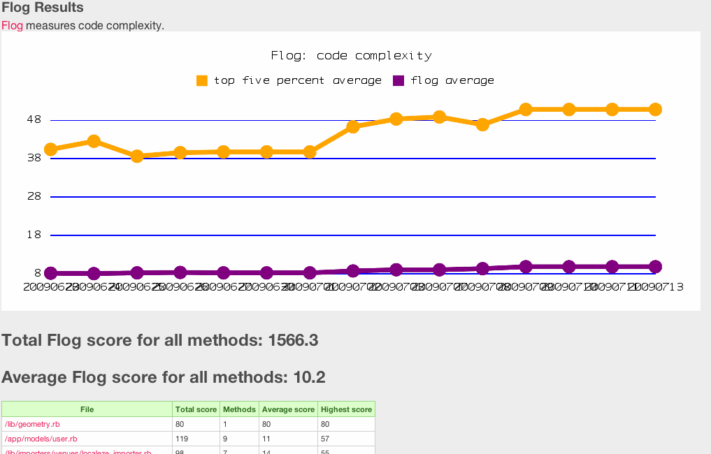
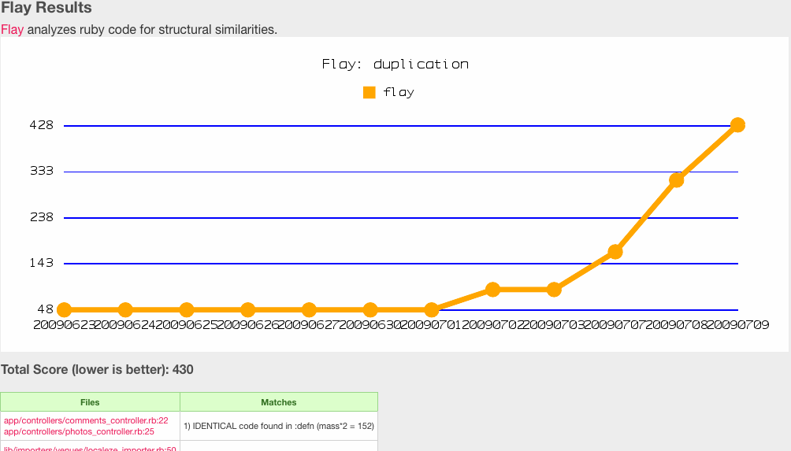
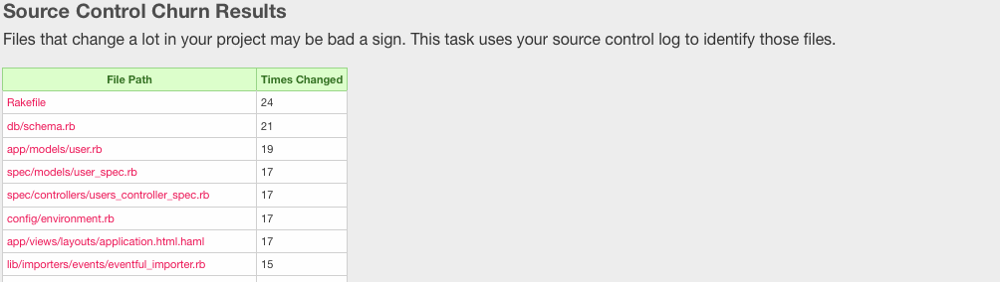
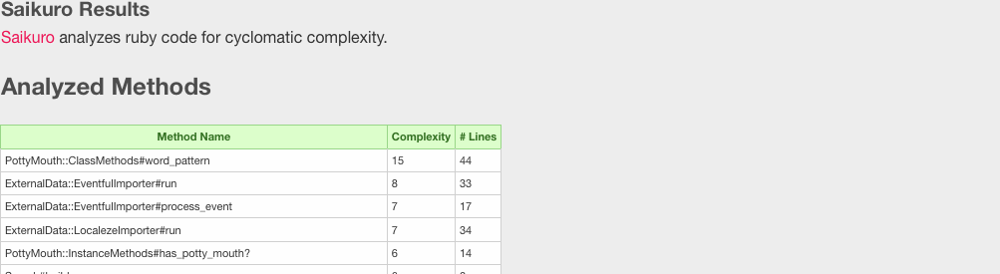

About metric_fu 2.1.1
Metric_fu is a set of rake tasks that make it easy to generate metrics reports. It uses
Saikuro,
Flog,
Flay,
Rcov,
Reek,
Roodi,
Churn,
RailsBestPractices,
Subversion,
Git, and
Rails
built-in stats task to create a series of reports. It's designed to integrate easily with
CruiseControl.rb
by placing files in the Custom Build Artifacts folder.
In 2.1.0 there are a lot of bug fixes, Check the HISTORY file for complete details. There's a verbose mode (config.verbose = true) that's helpful for debugging (from Dan Sinclair), the ability to opt out of TextMate (from Kakutani Shintaro) opening your files (config.darwin_txmt_protocol_no_thanks = true), and super cool annotations on the Hotspots page so you can see your code problems in-line with the file contents (also from Dan Sinclair).
In 2.0.0 the big new feature is Hotspots. The Hotspots report combines Flog, Flay, Rcov, Reek, Roodi, and Churn numbers into one report so you see parts of your code that have multiple problems like so:

That is one terrible method.
Big thanks to Dan Mayer and Ben Brinckerhoff for the Hotspots code and for helping me integrate it with RCov.
In 1.5.0 I re-wrote the Flog parsing engine to use Flog programmatically instead of parsing the command line output. This will hopefully stop minor changes in Flog's output from breaking metric_fu.
Installation:
gem install metric_fu
Then in your Rakefile:
require 'metric_fu'
Output:
|  |  |
|  |  |
 |
 |
 |
 |
{kind=link}
{kind=link}
{kind=link}
{kind=link}
Usage:
Out of the box metric_fu provides this tasks:- rake metrics:all # Generate coverage, cyclomatic complexity, flog, flay, reek, roodi, stats...
I recommend using CruiseControl.rb to set up a metrics build. See the CruiseControl.rb online docs for more info on how to set up cc.rb and, once you've got that figured out, change the cruise_config.rb file inside your project to have these lines:
project.rake_task = 'metrics:all'
project.scheduler.polling_interval = 24.hours
Which will check for updates every 24 hours and run all the metric_fu rake tasks (migrating your test db first). The output will be visible from an individual build's detail page.
Configuration:
The definitive source for configuration is, of course, the source: lib/base/configuration.rb
Metric_fu can be customized to your liking by altering the defaults in your Rakefile:
MetricFu::Configuration.run do |config|
#define which metrics you want to use
config.metrics = [:churn, :saikuro, :stats, :flog, :flay]
config.graphs = [:flog, :flay, :stats]
# ...
end
Note: if you don't want one of the metrics to run (like rcov), make sure you don't try to graph it (which will explode). Set config.graphs to exactly the graphs you want. Set config.graphs to an empty array (config.graphs = []) if you want no graphing at all.
Graphing
MetricFu uses Bluff for graphing (a Javascript library) by default. If you'd rather use Google Charts you can set 'config.graph_engine = :gchart' in the config. You'll have to install the googlecharts gem, of course.
Notes on Rails 3
If you use RSpec, you'll need to add this to one of your rake files:
require 'metric_fu'
MetricFu::Configuration.run do |config|
config.rcov[:test_files] = ['spec/**/*_spec.rb']
config.rcov[:rcov_opts] << "-Ispec" # Needed to find spec_helper
end
If you're using default Rails testing, then you can do this:
require 'metric_fu'
MetricFu::Configuration.run do |config|
config.rcov[:rcov_opts] << "-Itest" # Needed to find test_helper
end
Notes on metrics:coverage
When creating a coverage report, metric_fu runs all the tests in the test folder and specs in spec folder using Rcov. You can configure what files it should run and the RAILS_ENV (by setting 'environment') it runs under. Default config for rcov:
config.rcov = { :environment => 'test',
:test_files => ['test/**/*_test.rb',
'spec/**/*_spec.rb'],
:rcov_opts => ["--sort coverage",
"--no-html",
"--text-coverage",
"--no-color",
"--profile",
"--rails",
"--exclude /gems/,/Library/,/usr/,spec"],
:external => nil
}
By far, Rcov is the most troublesome report in metric_fu. This is not because of Rcov itself, but because the Rcov report has to actually execute your tests and test suites can be very tricky things. MetricFu naively shells out to the command line, runs rcov on your tests/specs, and captures the output. This does not always work well. If you are having problems with metric_fu, try turning off Rcov (see the above Configuration section).
Notes on metrics:saikuro
Saikuro measures cyclomatic complexity for Ruby. Default config for Saikuro:
config.saikuro = { :output_directory => 'tmp/metirc_fu/saikuro',
:input_directory => ['app', 'lib'],
:cyclo => "",
:filter_cyclo => "0",
:warn_cyclo => "5",
:error_cyclo => "7",
:formater => "text"}
Notes on metrics:flay
Flay analyzes ruby code for structural similarities. You can configure which directories need to be flayed. The defaults are 'lib' for non Rails projects and ['app', 'lib'] for Rails projects. By default, metric_fu ignores scores under 100. You can configure the minimum_score. Default config for Flay:
config.flay ={:dirs_to_flay => ['app', 'lib'],
:minimum_score => 100,
:filetypes => ['rb'] }
Notes on metrics:flog
Flog is another way of measuring complexity (or tortured code as the Flog authors like to put it). You should check out the awesome, and a little scary, Flog website for more info. Default config for Flog:
config.flog = { :dirs_to_flog => ['app', 'lib'] }
Notes on metrics:reek
Reek detects common code smells in ruby code. You can configure which directories need to be checked. The defaults are 'lib' for non Rails projects and ['app', 'lib'] for Rails projects. Default config for Reek:
config.reek = { :dirs_to_reek => ['app', 'lib'] }
Notes on metrics:roodi
Roodi parses your Ruby code and warns you about design issues you have based on the checks that is has configured. You can configure which directories need to be checked. The defaults are 'lib' for non Rails projects and ['app', 'lib'] for Rails projects. Default config for Roodi:
config.roodi = { :dirs_to_roodi => ['app', 'lib'] }
Notes on metrics:rails_best_practices
Rails Best Practices checks your rails files for violations of... Well the name says it all. The gem was inspired by ihower's presentation Rails Best Practices
Notes on metrics:stats
This is just 'rake stats' put into a file. On my projects I like to be able to look at CruiseControl and get stats about the app at different points in time.
Notes on metrics:churn
Files that change a lot in your project may be bad a sign. This task uses svn or git's log to identify those files and put them in a report.Metric_fu began its life as a plugin for Rails that generated code metrics reports. As of version 0.7.0, metric_fu is a gem (owing to the excellent work done by Sean Soper) and is hosted on GitHub at http://github.com/jscruggs/metric_fu.
Questions?
Use the Google Group: http://groups.google.com/group/metric_fu